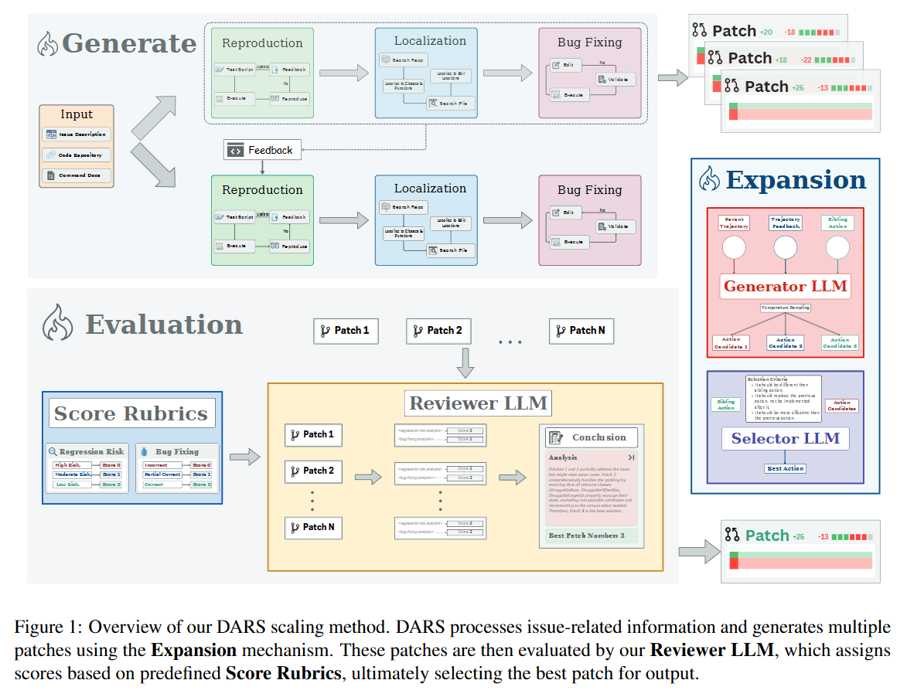
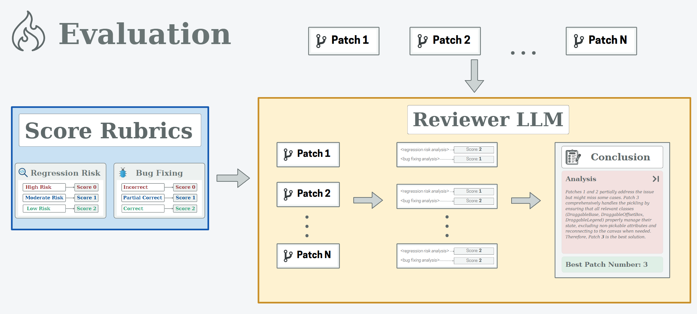
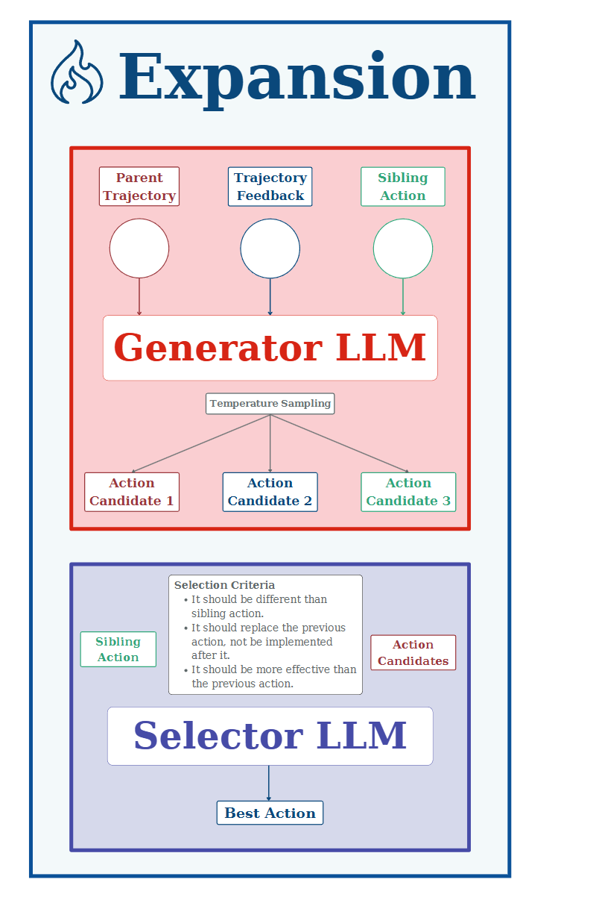
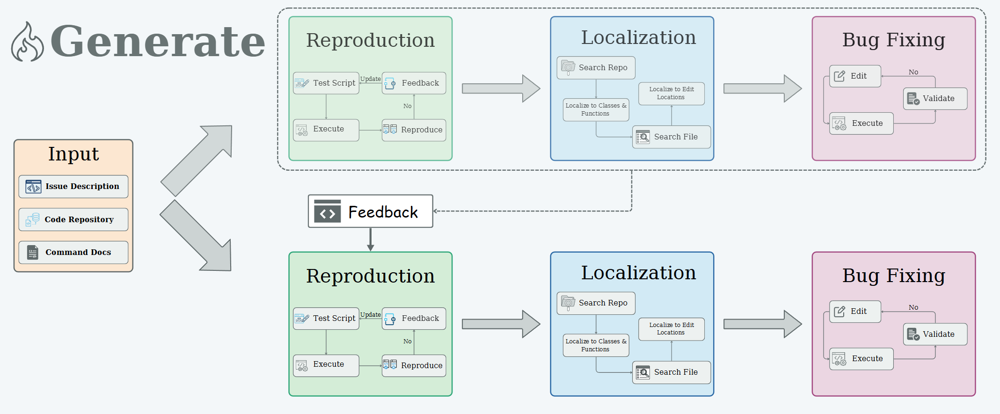

读paper21-通过自适应树遍历进行动态动作重采样以提高编码智能体性能
读paper21-通过自适应树遍历进行动态动作重采样以提高编码智能体性能
非常抽象，论文讲述的策略与总的逻辑框架没什么关系，主要还是介绍了Generate涉及到的策略，即通过智能体每一步决策可采用的不同Action，进行修复路径拓展，最终选择最佳路径实现修复。
核心是根据先前的执行结果对行动进行动态重新采样，从而为编码智能体提供参考，即通过采取替代行动，同时尽量减少冗余，增强智能体从次优决策中恢复和学习的能力。然而，误差也会随着轨迹的扩大而扩大，因此，我们首先要优化主干 SWE-Agent，提高其编辑能力并添加各种行动。然后，通过优化解决率的提高与在该点分支轨迹所增加的成本之间的权衡，确定最有希望的Action类型。最后引入了一个轨迹选择管道，利用专有的偏好优化模型来确定最有前途的解决方案。
DARS 不生成多个独立的轨迹，而是在关键决策点选择性地进行分支，在分支前使用深度优先策略充分探索轨迹。


Improving the Base SWE Agent
首先是对基座 SWE Agent的增强，主要是对智能体可用的工具的扩充，包括代码执行沙箱，项目级代码检索等
DARS Scaling
DARS 首先以深度优先的方式完成一个轨迹（即下图的复现-定位-修复），同时将关键决策节点存储在一个优先队列中，按节点深度升序排序。

一旦当前轨迹达到极限状态–通过提交命令（完成修复，可以commit）或达到预定义的最大深度（尝试修复的次数）–这些节点就会被扩展（进行分支）。在扩展过程中，我们会对 k 个备选Action进行采样，并选出最佳Action。我们将关键决策点定义为能以最小代价显著提高resolve rate的操作。在编辑Action时扩展轨迹尤其有效，这种方法可以让智能体从之前的错误中吸取教训，从次优决策中恢复过来，这对于像编程这样的长周期任务至关重要。最后，如果在达到最大深度之前没有分支提交代码，代码就会自动提交。由于运行时错误或 SWE-Agent 环境中的其他异常情况而未能执行预期轨迹的问题将重新运行
分支策略
DARS 的主要改进在于避免了在所有操作中都对轨迹进行分支，这将耗费指数级的计算量，而且其冗余性会导致轨迹选择管道的准确性较低。我们在 Table 13 中使用了因果分析，找出了对模型性能影响最大的四个关键Action：编辑、挂起、创建和提交。
Create
缺陷复现脚本对调试至关重要。细节不足会妨碍其有效性，并导致错误的修复。通过首先对相关代码进行优化和分析，模型可以改进错误的解决。一个关键问题是，模型往往无法在错误修复过程中完善缺陷复现脚本。虽然有些情况有所改善，但另一些情况则表现得过于自信，有缺陷的脚本被重复使用。优先进行定位是准确缺陷复现的关键。创建操作不同于缺陷复现脚本中的追加。虽然两者都能评估和修复错误，但附加操作通常能生成更好的脚本。模型通常会受到先前操作的影响，只对脚本进行细微的修改，而不是探索新的路径。在创建过程中尽早对解决方案进行采样，可以更好地进行探索。问题定位是否应该总是先于复制？不一定。早期定位可能会绕过缺陷复现，从而导致较弱的解决方案或对错误的错误解释。首先缺陷复现错误可以让我们更清楚地了解问题，并更准确地解决问题。
Append
当模型缺乏代码库或环境知识时，就会出现运行时错误，从而阻碍问题重现并耗尽其推理上下文。附加操作中的扩展可以通过加快缺陷复现阶段来缓解这一问题，减少缺陷定位所需的回合数。这样就能有更多的迭代来进行编辑和测试，从而改善错误的解决。这样做的好处有两个：在扩展过程中直接识别错误，或者改进复制脚本，从而更好地进行定位。
Edit
智能体有时会生成语义不正确的代码，导致 edit-Python循环（没看懂什么意思）。随着上下文长度的增加，它的推理能力也会减弱，从而陷入没有明确出口的无益循环。 智能体生成的代码经常存在基本语法错误，例如括号不匹配或缩进不正确，从而导致重复修复的循环。由于推理上的缺陷，即使修复已经失败，智能体也会经常陷入相同的无效编辑，例如重复添加结尾括号
Submit
虽然模型可以修复错误，但有时也会带来回归。为防止出现这种情况，模型应通过运行测试来验证更改，并根据测试结果修改编辑内容。此操作的扩展会促使模型在提交前重新评估其修复并纠正问题。通过考虑二级扩展，我们进一步减少了冗余。
上述操作，即创建、追加、编辑和提交，通常以相同的顺序出现。树中的操作越高，在该操作处扩展树的影响就越大。因此，如果在创建时扩展了一个分支，那么下一次我们只会在附加、编辑和提交时扩展树。同样，在编辑时扩展的分支也只会在下一次提交时扩展。我们遵循这一规则，但在追加时例外，因为根据经验，这样做产生的额外成本可以带来较高的解决率。最后，对于每个分支，我们对每种类型的扩展次数设置了上限，以防止树以指数形式增长
扩展策略
采用 “深度优先 ”策略，先探索当前轨迹，然后再分支，这种策略有两大优势： 高效和长视距反馈。到达终点条件后，我们从优先级队列中深度最小的节点继续前进。我们发现低深度优先是最有效的策略，因为探索的灵活性会随着节点深度的增加而降低。
Best Trajectory Selection
在智能体生成多个轨迹后，我们将通过轨迹修剪和轨迹选择两个阶段从所有尝试中选出最有效的轨迹。首先，我们会清理每个轨迹提交的补丁，删除其中的缺陷复现文件。然后，我们会修剪任何导致相同补丁的冗余轨迹。在第二阶段，我们使用现成的开放源代码和封闭源代码模型以及自定义的监督微调模型，根据自定义的标准（即重现、修复和引入新错误的可能性）选择最佳轨迹。
Patch Preparation。我们首先清理补丁，删除除错误修复部分之外的所有内容。这包括删除错误重现脚本、readme/文档更改、pycache 文件等。然后，我们根据三个标准（即复现、修复和引入新错误的可能性）对每个补丁生成评价。为了保证模型预测的准确性，我们使用了应用补丁后运行测试所获得的执行结果。
Patch Sampling。针对某个给定问题，我们基于DARS为该问题生成的补丁数量分布，对所有2至6个补丁的组合进行采样。为了构建平衡数据集，我们进一步对负面补丁进行细粒度采样——根据应用补丁后导致失败的测试用例组合，将所有负面补丁划分为不同组别。对于正面补丁，若存在则从所有正面补丁集合中采样；若不存在正面补丁，则直接使用基准真实补丁。
读代码-DARS核心工作流程
搜索树构建与探索
DARS代理通过构建和探索决策树来寻找最优解决方案。
核心实现逻辑
- 树节点结构：每个节点包含角色(用户/助手)、内容、动作、思考过程和子节点
- 动态分支：在关键决策点生成多个备选动作
- 分支评估：使用批评提示(critic prompt)评估各分支质量
关键代码实现
1 | class DARSNode: |
1 | def expand(self, node: DARSNode) -> List[DARSNode]: |
1 | def should_expand(self, node: DARSNode) -> bool: |
树构建过程通过递归方式探索可能的解决方案路径，在遇到关键决策点时生成多个备选方案，然后选择最有希望的路径继续执行。
自适应树遍历
DARS采用自适应树遍历策略，结合前向探索和智能回溯机制，高效地在决策空间中导航。
核心实现逻辑
- 前向探索：沿最有希望的路径深入
- 智能回溯：在遇到障碍时回到有未探索分支的节点
- 环境状态重置：确保在探索新分支时环境状态的一致性
关键代码实现
1 | def forward_with_error_check(self, node: DARSNode) -> Tuple[bool, str]: |
1 | def backtrack(self, current_node: DARSNode) -> Tuple[DARSNode, bool]: |
1 | def reset_env_to_node(self, target_node: DARSNode) -> bool: |
DARS的自适应树遍历算法能够有效地在复杂决策空间中导航，在遇到死胡同时迅速回溯并尝试替代路径，极大地提高了代码修复的成功率。
解决方案生成与验证
在探索过程中，DARS不断尝试生成解决方案并进行验证，以确保解决方案的正确性和有效性。
核心实现逻辑
- 渐进式改进：通过多次迭代和尝试逐步优化解决方案
- 验证机制：使用测试和环境反馈验证解决方案有效性
- 错误分析与修正：基于测试失败分析进行定向修复
关键代码实现
1 | def generate_solution(self) -> Dict[str, Any]: |
1 | def validate_solution(self, solution): |
1 | def adjust_strategy(self, failed_solution): |
解决方案生成过程是渐进式的，DARS会不断尝试不同的修复策略，并根据环境反馈和测试结果调整其方法，直到找到有效的解决方案或耗尽计算资源。
结果输出与后处理
最终阶段涉及将成功的解决方案格式化为补丁并进行后处理，如应用补丁、创建PR等。
核心实现逻辑
- 轨迹记录：保存整个决策过程和探索路径
- 补丁生成：将代码更改格式化为Git补丁
- 自动化操作：可选的补丁应用和PR创建
关键代码实现
1 | class SaveApplyPatchHook(MainHook): |
1 | class OpenPRHook(MainHook): |
1 | def finalize_trajectory(self): |
结果处理阶段不仅关注解决方案的保存，还提供了丰富的自动化功能，如应用补丁、创建PR等，使开发者可以无缝地将AI生成的修复集成到工作流中。